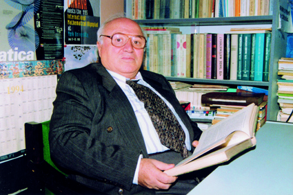
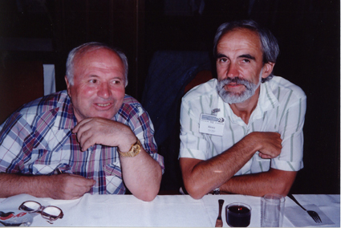
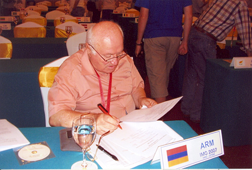

|
|||||||||||||||||||||||||||
Garnik Tonoyan (1936-2010) First posted Monday 13 September 2010, updated Tuesday 19 October 2010 A Man with a Great SpiritPROFESSOR GARNIK TONOYAN was born on October 29, 1936, in Yerevan, Armenia, to Aghassi and Zanik. At an early age, he lost his father Aghassi in World War II. As such, his exemplary mother Zanik carried the hardships of raising her children alone. In school Garnik displayed remarkable talent, which was noticed by his mother, who, in spite of the difficulties of wartime life, encouraged him to study hard at school, while his sisters worked in his place. Because of his talent, the young Garnik was advanced from fourth grade to tenth grade, and was the only one in his province (of Shirak) to received a gold medal for excellence in scholastic achievement. In 1954, he was accepted to the Department of Mathematics at Yerevan State University. He defended his Ph.D. in Moscow, under the famous mathematicians Isaak M. Yaglom and Vladimir G. Boltyanski of Moscow State University in 1972. Back in Yerevan he continued teaching a broad spectrum of mathematics including complex variable analysis, geometry, mathematical biophysics, mathematical history, and methodology of mathematical pedagogy, in the Department of Mathematics at Yerevan State University. Professor Tonoyan has authored over 50 books and has written greater than 300 scientific articles in mathematics, biology, the philosophy of mathematics, and mathematical pedagogy. Among his most notable books are Selected Mathematical Theorems and Problems (1970) and Students� Mathematical Competitions (1978). He is a co-author of International Mathematical Olympiads (1987). Since 1998, Professor Tonoyan was editor-in-chief of Integral, editor-in-chief of Knowledge (2003), member of the editorial board of Bnaget, Mathematics Plus and School Mathematics. He was a panel member in the International Mathematical Talent Search (IMTS) and also a member of The World Federation of National Mathematics Competitions, Gesellschaft f�r Didaktik der Mathematik (an organization that studies methods of teaching mathematics), and the American Mathematical Association. Professor Tonoyan has won many awards: the certificate of honor (Higher and Middle Education Ministry of USSR, 1982); the medal named after Khachatur Abovyan (from the Ministry of Education of the Republic of Armenia, 1990); gold medal from the Ministry of Education and Science of Armenia for contribution to education (2000). With great perseverance, since 1966 Professor Tonoyan has tirelessly committed his time and effort to the mathematical Olympic movement in Armenia. His primary focus was on the dissemination of knowledge and on the training of bright, young minds in Armenia from dawn to dusk. He was a founding principal of A. Shirakatsi mathematical school for talented students from 1991-1999. A defining moment in Garnik�s life during his Ph.D. studies was when he met Zubeida Karapetyan, his future wife, who brought with her many prosperous changes. They were married on January 5, 1967, and had four children. Professor Tonoyan was committed to mathematics as equally as he was committed to his family. He was a wonderful husband (happily married for 43 years), and an adorable father; he was a wise, fair and noble man. He had endless optimism and a charming personality. He liked listening to Peer Gynt by Grieg and watching rain in the windy weather. He passed away on the 29 of August, 2010 at the age of 74 from a heart attack, leaving behind his wife, three daughters, a grandson and many mourning friends worldwide. At this grieving moment for family and friends despite of such a painful loss, we need to get inspired by his life and legacy, and reassure ourselves that he will be always remembered by his work, books and bright memories of him, and his soul will be so near forever. We thank those who sent their condolences and share their thoughts about him. Here are some of them that we would like to share. The impact he had during the deliberations of the problems sessions and other functions associated with the
IMO were significant and lasting. I am sure that his traits and abilities are reflected within your life and those
of his students of mathematics, verifying once again that "Ontogeny Recapitulates Phylogeny".
He was a wonderful friend and a great colleague. I think of him and honor his memory often in my day-to-day work.
The world has lost a great soul.
Lusine, and my sisters, Mariam and Gayane Tonoyan
In 1994 Garnik Tonojan, left, with Alexey Tolpygo (Ukraine) attending WFNMC-2, Pravets, Bulgaria.
Garnik at his jury desk while leader of the Armenian IMO team in Hanoi in 2007.
|
|||||||||||||||||||||||||||
|
|||||||||||||||||||||||||||
 |
|||||||||||||||||||||||||||